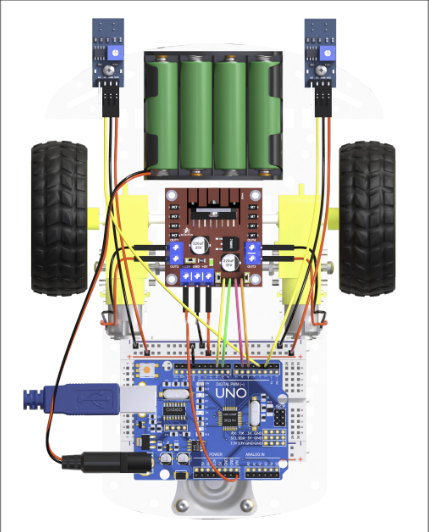

Qual a lista de material para nosso projeto?

Temos diversos componentes, na foto apresentamos todos.
Qual a lista de material para nosso projeto?
Temos diversos componentes, na foto apresentamos todos.

Qual a montagem para nosso projeto?

Esse é um estilo de montagem.